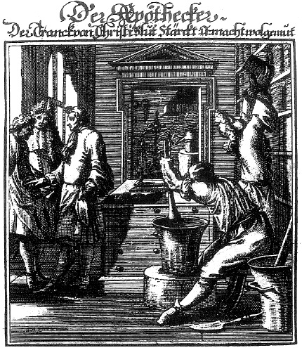

ŞEKİL 25. Eczacı (Caspar Luyken’in bakır kazıma resmi, 1695 dolayı).32
Avrupa’da cadı avı, 15. yüzyılda korkunç boyutlara varmış ve özellikle de ilaç (kocakarı ilacı) sanatından anlayan kadınlara yöneltilmişti. 15. yüzyıl sonunda kadınlar artık kentlerde sağlık konularında çalışamaz oldular. Worms’da 1582 tarihinde kadınların eczacı olarak çalışmalarını yasaklayan bir düzenleme getirilmişti.48 Kitap resimlemesinde bitki çizimleri, Otto Brunfels’in (1464-1534) Herbarum vivae eicones ad naturae imitationem, summa cum diligentia et artifico effigiatae, una cum effectibus earundem... (Bitkilerin Canlı İmgeleri...) (Strasbourg, 1530-36) adlı şifalı bitkiler kitabına Albrecht Dürer’in (1471-1528) öğrencisi Genç Hans Weiditz’in (~1495-1537) yaptığı 230 bitkinin dâhiyane çizimleri yoluyla ilk olarak antik düzeyine erişmiştir. 1543’ten itibaren yayımlanan Dioskorides nüshalarındaki resimler, büyük oranda Hans Weiditz’in çizimlerine dayanmaktadır.14 Brunfels’in sözü edilen eserinin daha sonra Contrafayt Kreuterbuch başlığı altında Almanca baskısı yapılmıştır. Brunfels’in Spiegel der Arznei (İlaçların Aynası) (Strasbourg, 1532) ve Reformation der Apotheken (Eczane Reformu) (Strasbourg, 1536) adlı kitapları da vardır.
14. yüzyılın seyrinde Avrupa’da eczacılar gezgin tüccar halinden dükkân sahibi yerleşik eşraf konumuna yükseldiler. Bunlar yalnızca şifalı bitki, baharat ve ecza satmıyor, bizzat kendi eczanelerinin ofislerinde (Lat. “officina”) ilaç da hazırlıyorlardı. Zamanla ilaç hazırlama işi dükkân içinden çıkıp, arka tarafta yer alan, müşteri gözünden uzak ve kapalı bölmedeki laboratuvarlara taşındı. Ofis kısmı yalnızca satış bölümü oldu. Eczacı da hem ilaç hazırlayan hem de satan kişi haline geldi. Günümüz Avrupa’sında eczanenin satış bölmesi, örneğin Almanya’da, hâlâ “Offizin” (ofis) olarak nitelenir. 16. yüzyılda ilk eczacılar, tıbbî bilgilerini eksiksiz hale getirmek için üniversitelerdeki tıp derslerini izlemeye başladılar.
Avrupa’da ilk bağımsız eczaneler, 1140’ta Napoli’de ve 1180’de Paris’te açılmıştır. Fransa’da 15. yüzyıl sonlarına doğru kralın emriyle aktarlar, bir lonca (İta. “loggia”, Fra. “loge”) içinde toplandılar. Bu loncaya baharatçılar, kökçüler ve şeker satıcıları da alınmakla birlikte, ilaç hazırlama izni yalnızca aktarlara verilmişti. Bu lonca Fransız Devrimi öncesinde “Collège Pharmacie”, aktarlar da “Pharmacien“ adını aldılar. İlk resmî farmakope, 1498’de Floransa’da İtalyanca olarak Nuovo Receptario adı altında yayınlandı. 1682’de Fransa Kralı XIV. Louis’nin (“Roi Soleille”: “Güneş Kral”) (yön. 1643-1715) çıkardığı bir emirnâme ile zehirli maddelerin yalnızca “Apothicaire”lerde satılabileceği ve bu satışlar için özel bir defterin tutulması zorunluluğu getirildi.27
Batı bitkisel ilaç tarihinde kilometre taşı olan dört eser vardır: (1) De materia medica (Vienna Dioscorides, İS 512), (2) The Badianus Manuscript (Badianus Elyazması) (1552 tarihli bir Aztek bitkisel ilaç kitabı), (3) İngiliz John Gerard’ın (1545-1612) “Yeni Dünya”nın (Amerika) bitkilerini konu edinen Herbal, or General History of Plants (Bitkilerin Genel Tarihi) (1597) adlı eseri, (4) Nicholas Culpeper’in (1616-1654) English Physician (İngiliz Hekim) (1652) adlı eseri.28
Floridus Macer’in (12. yüzyıl) De viribus herbarum (Bitkilerin Yorumlanması Üzerine) (ilk baskısı 1477) adlı şifalı otlar kitabı, en eskilerinden biri olup Yaşlı Plinius, Galenos, Dioskorides, Hippokrates ve diğer klasik yazarlardan derlenmiştir. Bundaki kimi ilaçlar sihir ya da büyüyü ima etmektedir. Bundaki reçeteler, bellekte kalmaya yardımcı olacak şekilde kafiyeli yazılmış olduğundan, hekimlerce sevilen bir eserdi.49